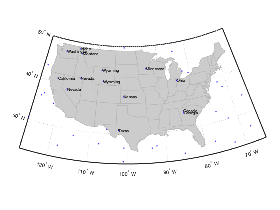

interpshapefile.m documentation
Author: Kelly Kearney
This repository includes the code for the example.m Matlab function, along with all dependent functions required to run it.
Paragraph description for this function or suite of functions.
Contents
Getting started
Prerequisites
This function requires Matlab R14 or later.
Downloading and installation
This code can be downloaded from Github or the MatlabCentral File Exchange. The File Exchange entry is updated daily from the GitHub repository.
Matlab Search Path
The following folders need to be added to your Matlab Search path (via addpath, pathtool, etc.):
interpshapefile-pkg/interpshapefile
Syntax
value = interpshapefile(S, lat, lon, attribute)
Description
value = interpshapefile(S, lat, lon, attribute) determines the value corresponding to location(s) with latitude lat and longitude lon based on the attribute field associated with polygons in the geographic data structure S (as returned by a call to shaperead). At minimum, S must include fields of 'Lat', 'Lon', and the specified attribute, and contain one or more elements with 'Polygon' Geometry. The returned value will either be a numeric or cell array, depending on the class of the attribute field; points outside of the polygons will receive a NaN or empty array as applicable.
Examples
We'll use the usastatlo.shp shapefile for our example; this file is included with the Mapping Toolbox:
States = shaperead('usastatelo', 'UseGeoCoords', true); usamap('conus'); geoshow('usastatelo.shp', 'facecolor', ones(1,3)*0.8, ... 'edgecolor', ones(1,3)*0.7);

Scatter some random points.
latlim = getm(gca, 'maplatlimit'); lonlim = getm(gca, 'maplonlimit'); rng(1); % for reproducability only lon = rand(40,1) * diff(lonlim) + lonlim(1); lat = rand(40,1) * diff(latlim) + latlim(1); plotm(lat, lon, 'b.');

Determine which state each point is in.
sname = interpshapefile(States, lat, lon, 'Name'); textm(lat, lon, sname, 'fontsize', 8);
Contributions
Community contributions to this package are welcome!
To report bugs, please submit an issue on GitHub and include:
- your operating system
- your version of Matlab and all relevant toolboxes (type ver at the Matlab command line to get this info)
- code/data to reproduce the error or buggy behavior, and the full text of any error messages received
Please also feel free to submit enhancement requests, or to send pull requests (via GitHub) for bug fixes or new features.
I do monitor the MatlabCentral FileExchange entry for any issues raised in the comments, but would prefer to track issues on GitHub.